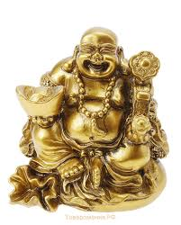

<p>
    <span style="font-size:12px">
        Хотэй (в переводе с японского &nbsp;&laquo;холщовый мешок&raquo;, &laquo;полотняный мешок&raquo;), Хотея также именуют Смеющимся Буддой. &nbsp;Хотей является одним из самых популярных персонажей нэцкэ. &nbsp;В Китае смеющися Будда называется Буддай. Традиционно хотея считают воплощением Будды Майтреи.<br />
        Одна из легенд гласит: &laquo;Давным &ndash; давно, примерно в конце 10 века в одной стране по всей видимости в Китае жил монах, он был маленьким и толстым, а звали его Це-Цы. Монах постоянно странствовал и его верными спутниками были лишь большой холщовый мешок да деревянные четки&raquo;. &nbsp;Далее в легенде о Хотэе сказано, что там, куда он приходил, у людей сразу появлялись здоровье, удача и благосостояние. Некоторые люди спрашивали, что несет монах Хотэй в мешке, он говорил, что несет за плечами &quot;Весь Мир&quot;.&nbsp;<br />
        В иконографии Смеющегося Будду могут изображать держащим различные атрибуты, такие как; &nbsp;слитки золота, монеты, посох, жемчужину, персик, веер, отгоняющий горе, мешок с богатством, ведущим в поводу дарственного коня. Считается, что Хотэй предопределяет людские судьбы и помогает в осуществлении желаний.
    </span>
</p>
